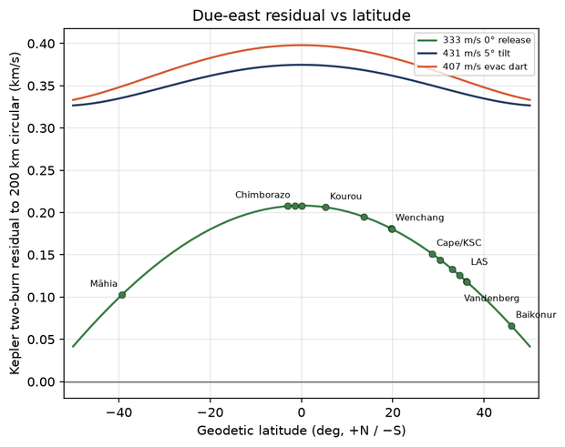

Status: Speculative modeling exercise only. Not a siting recommendation, a flight plan, or a claim that any of these places should host a magnetic-rail or evac-tube launch. No operational claims. StarTram is named only as a well-known mountain-slope / evac-tube concept; no vendor specs are used. Coordinates are published public values.
Prepared 27 November 2026 as a geography layer on the goal-seeking continuation. It does not start over. The rail exits, stages, and residuals of that note are recycled; only Earth-rotation boost, inclination limits, and the residual re-evaluation are new.
There is a reason orbital launches usually leave from a short list of sites. This addendum asks how much of that reason is still visible once a rail has already done most of the work: a due-east Earth-rotation boost of v = 465.1 cos(lat) m/s at the surface (ω times the WGS84 equatorial radius), an inclination floor of i_min = |latitude|, site elevation, downrange ocean versus land, and whether the mid-latitude jet of the parent atmosphere model is present. The boost is also scaled by (R_eq + h)/R_eq at the release altitude, which adds about 5.8 m/s at the equator at 80 km (470.9 m/s total there).
The three recycled frontier exits are evaluated as due-east launches into a 200 km circular orbit at i = |lat| (no plane change). A plane change down to an equatorial orbit is a different, much larger number — about 4.82 km/s from Las Vegas at 36.1°N, or 0.71 km/s from Kourou — and is not in the ranked residual.
The 0° (horizontal) 17,000 mph release at 80 km from the tilt sweep — parent residual 333 m/s, apogee stuck at 80 km — is included as well, because geography changes that case more than it changes the 5° ones.
No. The equatorial boost is real and large, about 465 m/s at the surface and 471 m/s at 80 km, which is the same size as the 407–431 m/s no-stage gap. It cannot be subtracted from that gap. Added at 5° and 80 km, the extra speed raises apogee (to about 1,110–1,245 km at the equator) and leaves perigee underground. The same two-burn metric used in the parent note, now taken from the true Kepler apogee, is still 375 m/s (5° tilt) and 398 m/s (evac dart) at the equator — only a 9–56 m/s improvement. Circularizing at that high apogee is a similar 367–388 m/s. Y(c) is not met.
For these particular exits the equator is not even the residual-minimizing latitude. The rail has already supplied about 7.6 km/s of relative speed; local circular speed at 80 km is 7,861 m/s. The equatorial boost overshoots, and the leftover Δv is spent shaping the ellipse, not filling a 400 m/s hole. That is the opposite of a rocket that starts from rest, for which every m/s of rotation is almost a 1:1 saving.
The 0° release is the case where geography helps most. Without the boost, 7,600 m/s at 80 km is still subcircular, 80 km is apogee, and the vehicle does not climb (Y(a) fails). With the boost, 80 km becomes perigee and the vehicle does climb. Residual then falls as latitude rises, because there is less overshoot. Among the listed sites, Baikonur is lowest at 66 m/s (apogee 304 km). Las Vegas and Mount Charleston are 118–119 m/s. Kourou and Chimborazo, near the equator, are 206–208 m/s. A latitude near 56° would supply the 261 m/s needed to circularize at 80 km; a Hohmann raise from there to 200 km is only 72 m/s. No site in this set sits at 56°, and Y(c) still does not close at Baikonur.
Due-east, altitude-adjusted boost, vacuum two-burn residual to a 200 km circular orbit at i = |lat|. Real sites only; an idealized equator is in the text above. “Boost” is at the 80 km mouth. “Ocean?” is whether a due-east azimuth first overflies open water.
| Rank (0°) | Site | Lat | Elev | Boost at 80 km | i_min | 0° residual | 5° tilt residual | Downrange east |
|---|---|---|---|---|---|---|---|---|
| 1 | Baikonur, Kazakhstan | 45.92°N | 90 m | 328 m/s | 45.9° | 66 m/s | 329 m/s | land (Central Asia) |
| 2 | Māhia, New Zealand (LC-1) | 39.26°S | 104 m | 365 m/s | 39.3° | 103 m/s | 336 m/s | Pacific Ocean |
| 3 | Mount Charleston, NV | 36.27°N | 3,632 m | 380 m/s | 36.3° | 118 m/s | 340 m/s | U.S. land |
| 4 | Las Vegas (LAS area) | 36.08°N | 664 m | 381 m/s | 36.1° | 119 m/s | 340 m/s | U.S. land |
| 5 | Vandenberg SFB | 34.58°N | 25 m | 388 m/s | 34.6° | 126 m/s | 342 m/s | U.S. land due east (the site is used south over the Pacific, not due east) |
| 6 | Spaceport America, NM | 32.99°N | 1,409 m | 395 m/s | 33.0° | 133 m/s | 344 m/s | U.S. land |
| 7 | Tanegashima (Yoshinobu) | 30.40°N | 20 m | 406 m/s | 30.4° | 144 m/s | 348 m/s | Pacific Ocean |
| 8 | Cape Canaveral / KSC | 28.61°N | 3 m | 413 m/s | 28.6° | 151 m/s | 350 m/s | Atlantic Ocean |
| 9 | Mauna Kea, Hawaiʻi | 19.82°N | 4,207 m | 443 m/s | 19.8° | 181 m/s | 362 m/s | Pacific Ocean |
| 10 | Wenchang, Hainan | 19.61°N | 10 m | 444 m/s | 19.6° | 181 m/s | 362 m/s | South China Sea / Pacific |
| 11 | Sriharikota (SDSC) | 13.72°N | 3 m | 458 m/s | 13.7° | 195 m/s | 368 m/s | Bay of Bengal |
| 12 | Kourou (CSG) | 5.24°N | 10 m | 469 m/s | 5.2° | 206 m/s | 374 m/s | Atlantic Ocean |
| 13 | Kilimanjaro, Tanzania | 3.08°S | 5,895 m | 470 m/s | 3.1° | 208 m/s | 374 m/s | land, then Indian Ocean |
| 14 | Chimborazo, Ecuador | 1.47°S | 6,263 m | 471 m/s | 1.5° | 208 m/s | 375 m/s | Andes then Amazon (land) |
For the 5° evac dart the order is the same and the residuals are a little higher (Baikonur 339 m/s, LAS 355 m/s, Kourou 397 m/s). Figure 10 plots residual against latitude; the 0° curve is the one that moves.
For these 80 km evac-mouth exits, site elevation does not change the residual. The vehicle is already released at 80 km; a 3.6 km or 6.3 km start only shortens the tube that gets it there. A StarTram-type slope up a real mountain (named as a concept only) is a known idea. No mountain is 80 km high. On a 5° helix or ramp, the path to an 80 km mouth is 918 km from sea level; Chimborazo’s 6,263 m saves 72 km of that path, Kilimanjaro 68 km, Mauna Kea 48 km, Mount Charleston 42 km, Spaceport America 16 km. The prior search’s start-height cases (sea level, 4 km, 30 km) still apply to any open-air climb, where thinner air at 4 km is a real help; they do not change the 80 km evac ranking.
Downrange safety is a second, independent reason for the usual coastal list. Kourou, Cape Canaveral, Wenchang, Sriharikota, Tanegashima, Māhia, and Mauna Kea have open water due east. Vandenberg has water to the south, not the east, which is why it is used for polar and retrograde paths and why its due-east boost in the table is not how the site is flown. Baikonur, Spaceport America, Las Vegas, and Mount Charleston overfly land. Chimborazo and Kilimanjaro do too, for several hundred kilometers. A low residual at Baikonur or Las Vegas in the table does not make those places a safe eastward corridor.
The mid-latitude jet of the parent model (50 m/s, 9–14 km, a labeled assumption) sits over roughly 30–50° of latitude, so Vandenberg, Spaceport America, Las Vegas, Mount Charleston, Baikonur, Māhia, and the southern edge of Tanegashima are in that band; Kourou, Wenchang, Sriharikota, and the equatorial mountains are not. As in the continuation, that wind is negligible against 7.8 km/s and matters only for a later low-tier glide.
The usual low-latitude, east-coast spaceport is still the right idea for a vehicle that must gain 7.8 km/s from rest, and Kourou remains the cleanest listed site if the target orbit is actually equatorial (i_min = 5.2°, ocean downrange, full boost). For the recycled 17,000 mph / 80 km exits, the rail has already done most of that job, the equatorial boost overshoots a 200 km circular, and Y(c) does not close. The leftover Δv is tens to a few hundred meters per second of orbit shaping, plus whatever plane change one insists on, plus the still-unsolved heating, g, and structural limits of the parent notes. Las Vegas and Mount Charleston pick up a mid-latitude boost of about 380 m/s and, on the 0° exit, a residual near 118 m/s — but they overfly land, and a 36° inclination floor is the orbit you get without a very expensive plane change.

The boost law and the site coordinates are public and labeled; the residuals are vacuum two-burn numbers from recycled exits, not a new rail integration and not a CFD or n-body trajectory. fly() time-caps on the higher boosted ellipses were discarded in favor of Kepler apogees; the unboosted 5° cases, where fly() did reach apogee, agree with Kepler to about 1 m/s. Perigee underground means a first-apogee burn is required before the vehicle comes back; that burn is already in the residual. Due-east is assumed. Off-azimuth launch reduces the boost. Elevation is not a residual factor at an 80 km evac mouth. No configuration reached circular speed.
Source: recycled exits from Magnetic_Launch_GoalSeek_Continuation.md and outputs/goal_seek_recycle.json, outputs/tilt_torque.json; new evaluation in outputs/geography.json. Figure: outputs/fig10_geography.png. Site coordinates as listed in that file’s source fields.